library(tidyverse); library(magrittr); library(skimr)
soc_data <- read.csv("http://peopleanalytics-regression-book.org/data/sociological_data.csv")4.7.2 Data exercises
Load the sociological_data data set via the peopleanalyticsdata package or download it from the internet. This data represents a sample of information obtained from individuals who participated in a global research study and contains the following fields:
- annual_income_ppp: The annual income of the individual in PPP adjusted US dollars
- average_wk_hrs: The average number of hours per week worked by the individual
- education_months: The total number of months spent by the individual in formal primary, secondary and tertiary education
- region: The region of the world where the individual lives
- job_type: Whether the individual works in a skilled or unskilled profession
- gender: The gender of the individual
- family_size: The size of the individual’s family of dependents
- work_distance: The distance between the individual’s residence and workplace in kilometers
- languages: The number of languages spoken fluently by the individual
Conduct some exploratory data analysis on this data set. Including:
- Identify the extent to which missing data is an issue.
summary(soc_data) annual_income_ppp average_wk_hrs education_months region
Min. : 2863 Min. :30.00 Min. : 40.0 Length:2618
1st Qu.: 62653 1st Qu.:39.00 1st Qu.:157.0 Class :character
Median : 82140 Median :43.00 Median :184.0 Mode :character
Mean : 76040 Mean :44.19 Mean :179.3
3rd Qu.: 90112 3rd Qu.:50.00 3rd Qu.:207.0
Max. :119564 Max. :55.00 Max. :280.0
NA's :10 NA's :34 NA's :19
job_type gender family_size work_distance
Length:2618 Length:2618 Min. : 0.00 Min. : 0.000
Class :character Class :character 1st Qu.: 2.00 1st Qu.: 0.000
Mode :character Mode :character Median : 3.00 Median : 0.000
Mean : 3.26 Mean : 0.985
3rd Qu.: 4.00 3rd Qu.: 1.000
Max. :10.00 Max. :105.000
NA's :191 NA's :412
languages
Min. :1.000
1st Qu.:1.000
Median :1.000
Mean :1.018
3rd Qu.:1.000
Max. :5.000
NA's :412 The answer very much depends on the variable under examination. languages and work_distance are missing 15.737204% of the data. That is quite a bit. The good news, such that it is, is that it is the same 412 observations that are missing both. How much an issue is it? One way to examine this would be to estimate the model with those data and without. There are also 119 observations without family_size, of those 41 are missing. This means that 490 are missing via patterns in these three variables; that’s 0.1871658
soc_data %>% janitor::tabyl(languages, work_distance) languages 0 1 10 105 11 12 13 14 15 16 18 19 2 20 21 3 4 5 6 7 8 9
1 1582 343 8 0 5 3 2 0 0 0 0 0 92 0 0 58 38 20 12 11 5 1
2 0 0 0 0 0 0 0 5 6 3 1 2 0 2 2 0 0 0 0 0 0 0
4 0 0 0 0 0 0 0 0 0 0 0 0 0 0 0 0 0 0 0 0 0 0
5 0 0 0 1 0 0 0 0 0 0 0 0 0 0 0 0 0 0 0 0 0 0
NA 0 0 0 0 0 0 0 0 0 0 0 0 0 0 0 0 0 0 0 0 0 0
91 93 94 96 NA_
0 0 0 0 0
0 0 0 0 0
1 0 0 0 0
0 1 1 1 0
0 0 0 0 412soc_data %>% dplyr::filter(is.na(languages) & is.na(work_distance)) %>% skim(family_size)| Name | Piped data |
| Number of rows | 412 |
| Number of columns | 9 |
| _______________________ | |
| Column type frequency: | |
| numeric | 1 |
| ________________________ | |
| Group variables | None |
Variable type: numeric
| skim_variable | n_missing | complete_rate | mean | sd | p0 | p25 | p50 | p75 | p100 | hist |
|---|---|---|---|---|---|---|---|---|---|---|
| family_size | 41 | 0.9 | 2.79 | 1.54 | 0 | 2 | 3 | 3 | 10 | ▇▇▁▁▁ |
library(naniar)
naniar::gg_miss_var(soc_data)
- Determine if the data types are appropriate for analysis.
To be honest, I am not entirely sure what this means. Yes, we can analyse them in the current form.
- Using a correlation matrix, pairplot or alternative method, identify whether collinearity is present in the data.
region is categorical with too many categories so it has to be dropped from plots. work_distance and languages are very highly correlated.
soc_data %>% dplyr::select(-region) %>% GGally::ggpairs()
- Identify and discuss anything else interesting that you see in the data.
work_distance is messy and highly correlated with languages.
Prepare to build a linear regression model to explain the variation in annual_income_ppp using the other data in the data set.
- Are there any fields which you believe should not be included in the model? If so, why?
I think there are principled reasons to ignore work_distance and languages as they have so much missing data. Not exactly sure why family_size would be relevant but that can be included and excluded.
- Would you consider imputing missing data for some or all fields where it is an issue? If so, what might be some simple ways to impute the missing data?
I would not but largely because I am not sure what would necessarily predict work distance, languages, and family size. Were I to impute it, I prefer multiple imputation to represent the full data correlation structure in the imputation process.
- Which variables are categorical? Convert these variables to dummy variables using a convenient function or using your own approach.
The fastDummies package is amazing for this.
summary(soc_data) annual_income_ppp average_wk_hrs education_months region
Min. : 2863 Min. :30.00 Min. : 40.0 Length:2618
1st Qu.: 62653 1st Qu.:39.00 1st Qu.:157.0 Class :character
Median : 82140 Median :43.00 Median :184.0 Mode :character
Mean : 76040 Mean :44.19 Mean :179.3
3rd Qu.: 90112 3rd Qu.:50.00 3rd Qu.:207.0
Max. :119564 Max. :55.00 Max. :280.0
NA's :10 NA's :34 NA's :19
job_type gender family_size work_distance
Length:2618 Length:2618 Min. : 0.00 Min. : 0.000
Class :character Class :character 1st Qu.: 2.00 1st Qu.: 0.000
Mode :character Mode :character Median : 3.00 Median : 0.000
Mean : 3.26 Mean : 0.985
3rd Qu.: 4.00 3rd Qu.: 1.000
Max. :10.00 Max. :105.000
NA's :191 NA's :412
languages
Min. :1.000
1st Qu.:1.000
Median :1.000
Mean :1.018
3rd Qu.:1.000
Max. :5.000
NA's :412 region, job_type, and gender need such treatment.
library(fastDummies)
soc_data.dum <- soc_data %>% fastDummies::dummy_columns(., select_columns = c("region","job_type","gender"))Run and interpret the model. For convenience, and to avoid long formula strings, you can use the formula notation annual_income_ppp ~ . which means ‘regress annual_income against everything else’. You can also remove fields this way, for example annual_income_ppp ~ . - family_size.
Mod1 <- soc_data %>% dplyr::select(-c(work_distance, languages, family_size)) %>% lm(annual_income_ppp ~ ., data=.)
summary(Mod1)
Call:
lm(formula = annual_income_ppp ~ ., data = .)
Residuals:
Min 1Q Median 3Q Max
-66558 -5076 32 4886 34054
Coefficients:
Estimate Std. Error t value Pr(>|t|)
(Intercept) 61013.833 3547.587 17.199 < 2e-16
average_wk_hrs -94.381 49.614 -1.902 0.057245
education_months 135.854 8.919 15.232 < 2e-16
regionCentral Asia -9950.611 2219.350 -4.484 0.00000767
regionEastern Asia -11.119 2306.359 -0.005 0.996154
regionEastern Europe -8868.991 1957.127 -4.532 0.00000612
regionLatin America and the Caribbean 1520.957 1974.732 0.770 0.441247
regionMelanesia -4341.571 2290.646 -1.895 0.058160
regionMicronesia -9862.966 2590.009 -3.808 0.000143
regionNorthern Africa -571.361 2198.879 -0.260 0.795007
regionNorthern America 14003.282 2999.688 4.668 0.00000320
regionNorthern Europe -295.495 1863.336 -0.159 0.874010
regionPolynesia -1463.552 2539.825 -0.576 0.564503
regionSouth-eastern Asia -2932.501 2106.504 -1.392 0.164009
regionSouthern Asia -3410.363 2195.464 -1.553 0.120460
regionSouthern Europe 4555.134 1903.801 2.393 0.016799
regionSub-Saharan Africa -20719.828 2066.605 -10.026 < 2e-16
regionWestern Asia 2658.151 1995.651 1.332 0.182989
regionWestern Europe 6625.710 1922.203 3.447 0.000576
job_typeUnskilled -8074.631 803.987 -10.043 < 2e-16
genderM 9715.197 665.656 14.595 < 2e-16
(Intercept) ***
average_wk_hrs .
education_months ***
regionCentral Asia ***
regionEastern Asia
regionEastern Europe ***
regionLatin America and the Caribbean
regionMelanesia .
regionMicronesia ***
regionNorthern Africa
regionNorthern America ***
regionNorthern Europe
regionPolynesia
regionSouth-eastern Asia
regionSouthern Asia
regionSouthern Europe *
regionSub-Saharan Africa ***
regionWestern Asia
regionWestern Europe ***
job_typeUnskilled ***
genderM ***
---
Signif. codes: 0 '***' 0.001 '**' 0.01 '*' 0.05 '.' 0.1 ' ' 1
Residual standard error: 9407 on 2539 degrees of freedom
(58 observations deleted due to missingness)
Multiple R-squared: 0.7962, Adjusted R-squared: 0.7946
F-statistic: 495.8 on 20 and 2539 DF, p-value: < 2.2e-16- Determine what variables are significant predictors of annual income and what is the effect of each on the outcome.
soc_data %>% dplyr::select(-c(work_distance, languages, family_size)) %>% lm(annual_income_ppp ~ ., data=.) %>% summary %$% coefficients %>% data.frame %>% filter(`Pr...t..` < 0.05) Estimate Std..Error t.value Pr...t..
(Intercept) 61013.8327 3547.587273 17.198684 8.550317e-63
education_months 135.8542 8.918884 15.232193 3.346444e-50
regionCentral Asia -9950.6108 2219.350223 -4.483569 7.666478e-06
regionEastern Europe -8868.9906 1957.126882 -4.531638 6.123784e-06
regionMicronesia -9862.9659 2590.008578 -3.808082 1.433663e-04
regionNorthern America 14003.2817 2999.687867 4.668246 3.195797e-06
regionSouthern Europe 4555.1337 1903.800748 2.392653 1.679935e-02
regionSub-Saharan Africa -20719.8283 2066.605062 -10.026022 3.148593e-23
regionWestern Europe 6625.7095 1922.203143 3.446935 5.762064e-04
job_typeUnskilled -8074.6311 803.987070 -10.043235 2.662334e-23
genderM 9715.1966 665.656089 14.594919 2.169990e-46Months of education, region, job type, and gender are predictors of annual income. Each month of education begets about 136 dollars, unskilled labor is lower by 8075 dollars than skilled labor, and Males have annual incomes about 9715 dollars higher. A number of regions have higher and lower average annual incomes, also.
- Determine the overall fit of the model.
The model accounts for almost 80 percent of the variation in annual incomes and the model \(F\) statistic is enormous.
- Do some simple analysis on the residuals of the model to determine if the model is safe to interpret.
gvlma::gvlma(Mod1)
Call:
lm(formula = annual_income_ppp ~ ., data = .)
Coefficients:
(Intercept) average_wk_hrs
61013.83 -94.38
education_months regionCentral Asia
135.85 -9950.61
regionEastern Asia regionEastern Europe
-11.12 -8868.99
regionLatin America and the Caribbean regionMelanesia
1520.96 -4341.57
regionMicronesia regionNorthern Africa
-9862.97 -571.36
regionNorthern America regionNorthern Europe
14003.28 -295.49
regionPolynesia regionSouth-eastern Asia
-1463.55 -2932.50
regionSouthern Asia regionSouthern Europe
-3410.36 4555.13
regionSub-Saharan Africa regionWestern Asia
-20719.83 2658.15
regionWestern Europe job_typeUnskilled
6625.71 -8074.63
genderM
9715.20
ASSESSMENT OF THE LINEAR MODEL ASSUMPTIONS
USING THE GLOBAL TEST ON 4 DEGREES-OF-FREEDOM:
Level of Significance = 0.05
Call:
gvlma::gvlma(x = Mod1)
Value p-value Decision
Global Stat 517.2979 0.00000000 Assumptions NOT satisfied!
Skewness 3.9341 0.04731624 Assumptions NOT satisfied!
Kurtosis 497.9156 0.00000000 Assumptions NOT satisfied!
Link Function 15.1844 0.00009751 Assumptions NOT satisfied!
Heteroscedasticity 0.2639 0.60748142 Assumptions acceptable.Probably not. The middle 50 percent of residuals are reasonably well balanced but they have a very long left tail in addition to failing the diagnostics above.
- Experiment with improving the model fit through possible interaction terms or non-linear extensions.
Mod2 <- soc_data %>% mutate(ln_income = log(annual_income_ppp)) %>% dplyr::select(-c(work_distance, languages, family_size,annual_income_ppp)) %>% lm(ln_income ~ ., data=.)
summary(Mod2)
Call:
lm(formula = ln_income ~ ., data = .)
Residuals:
Min 1Q Median 3Q Max
-3.11453 -0.06136 0.00394 0.07564 0.59898
Coefficients:
Estimate Std. Error t value Pr(>|t|)
(Intercept) 10.9156109 0.0706493 154.504 < 2e-16
average_wk_hrs -0.0009693 0.0009881 -0.981 0.32669
education_months 0.0017640 0.0001776 9.932 < 2e-16
regionCentral Asia -0.0984659 0.0441978 -2.228 0.02598
regionEastern Asia 0.0088410 0.0459306 0.192 0.84738
regionEastern Europe -0.0797522 0.0389757 -2.046 0.04084
regionLatin America and the Caribbean 0.0379392 0.0393263 0.965 0.33477
regionMelanesia -0.0067090 0.0456176 -0.147 0.88309
regionMicronesia -0.0895268 0.0515794 -1.736 0.08274
regionNorthern Africa 0.0145632 0.0437901 0.333 0.73949
regionNorthern America 0.1609234 0.0597380 2.694 0.00711
regionNorthern Europe 0.0063751 0.0371079 0.172 0.86361
regionPolynesia 0.0045840 0.0505800 0.091 0.92779
regionSouth-eastern Asia -0.0141714 0.0419505 -0.338 0.73553
regionSouthern Asia -0.0089686 0.0437221 -0.205 0.83749
regionSouthern Europe 0.0698175 0.0379137 1.841 0.06567
regionSub-Saharan Africa -0.3306967 0.0411559 -8.035 1.42e-15
regionWestern Asia 0.0571853 0.0397429 1.439 0.15031
regionWestern Europe 0.0833153 0.0382802 2.176 0.02961
job_typeUnskilled -0.0846780 0.0160112 -5.289 1.34e-07
genderM 0.1962831 0.0132564 14.807 < 2e-16
(Intercept) ***
average_wk_hrs
education_months ***
regionCentral Asia *
regionEastern Asia
regionEastern Europe *
regionLatin America and the Caribbean
regionMelanesia
regionMicronesia .
regionNorthern Africa
regionNorthern America **
regionNorthern Europe
regionPolynesia
regionSouth-eastern Asia
regionSouthern Asia
regionSouthern Europe .
regionSub-Saharan Africa ***
regionWestern Asia
regionWestern Europe *
job_typeUnskilled ***
genderM ***
---
Signif. codes: 0 '***' 0.001 '**' 0.01 '*' 0.05 '.' 0.1 ' ' 1
Residual standard error: 0.1873 on 2539 degrees of freedom
(58 observations deleted due to missingness)
Multiple R-squared: 0.7041, Adjusted R-squared: 0.7018
F-statistic: 302.1 on 20 and 2539 DF, p-value: < 2.2e-16gvlma::gvlma(Mod2)
Call:
lm(formula = ln_income ~ ., data = .)
Coefficients:
(Intercept) average_wk_hrs
10.9156109 -0.0009693
education_months regionCentral Asia
0.0017640 -0.0984659
regionEastern Asia regionEastern Europe
0.0088410 -0.0797522
regionLatin America and the Caribbean regionMelanesia
0.0379392 -0.0067090
regionMicronesia regionNorthern Africa
-0.0895268 0.0145632
regionNorthern America regionNorthern Europe
0.1609234 0.0063751
regionPolynesia regionSouth-eastern Asia
0.0045840 -0.0141714
regionSouthern Asia regionSouthern Europe
-0.0089686 0.0698175
regionSub-Saharan Africa regionWestern Asia
-0.3306967 0.0571853
regionWestern Europe job_typeUnskilled
0.0833153 -0.0846780
genderM
0.1962831
ASSESSMENT OF THE LINEAR MODEL ASSUMPTIONS
USING THE GLOBAL TEST ON 4 DEGREES-OF-FREEDOM:
Level of Significance = 0.05
Call:
gvlma::gvlma(x = Mod2)
Value p-value Decision
Global Stat 143804.115 0.000000 Assumptions NOT satisfied!
Skewness 3716.416 0.000000 Assumptions NOT satisfied!
Kurtosis 140075.937 0.000000 Assumptions NOT satisfied!
Link Function 2.550 0.110312 Assumptions acceptable.
Heteroscedasticity 9.212 0.002404 Assumptions NOT satisfied!Mod2 <- soc_data %>% dplyr::select(-c(work_distance, languages, family_size)) %>% lm(annual_income_ppp ~ region + job_type*average_wk_hrs+education_months+region+gender*education_months, data=.)
summary(Mod2)
Call:
lm(formula = annual_income_ppp ~ region + job_type * average_wk_hrs +
education_months + region + gender * education_months, data = .)
Residuals:
Min 1Q Median 3Q Max
-65530 -5157 3 5146 33350
Coefficients:
Estimate Std. Error t value Pr(>|t|)
(Intercept) 54829.60 4376.12 12.529 < 2e-16 ***
regionCentral Asia -3609.73 2274.42 -1.587 0.112616
regionEastern Asia 4834.25 2346.28 2.060 0.039464 *
regionEastern Europe -4394.43 1977.73 -2.222 0.026374 *
regionLatin America and the Caribbean 6933.59 2030.08 3.415 0.000647 ***
regionMelanesia 1897.75 2351.66 0.807 0.419752
regionMicronesia -3031.98 2685.54 -1.129 0.259005
regionNorthern Africa 4816.64 2245.49 2.145 0.032046 *
regionNorthern America 16160.99 2956.92 5.465 5.07e-08 ***
regionNorthern Europe 1849.26 1843.39 1.003 0.315869
regionPolynesia 3128.26 2567.06 1.219 0.223103
regionSouth-eastern Asia 2998.16 2149.16 1.395 0.163126
regionSouthern Asia 3517.06 2247.88 1.565 0.117798
regionSouthern Europe 8416.08 1913.55 4.398 1.14e-05 ***
regionSub-Saharan Africa -14561.47 2112.30 -6.894 6.84e-12 ***
regionWestern Asia 8247.65 2063.91 3.996 6.62e-05 ***
regionWestern Europe 9742.39 1919.92 5.074 4.17e-07 ***
job_typeUnskilled 5374.35 4251.07 1.264 0.206262
average_wk_hrs 188.67 88.89 2.123 0.033883 *
education_months 44.78 12.15 3.685 0.000233 ***
genderM -18683.40 2797.28 -6.679 2.94e-11 ***
job_typeUnskilled:average_wk_hrs -305.25 101.63 -3.004 0.002695 **
education_months:genderM 179.74 17.29 10.398 < 2e-16 ***
---
Signif. codes: 0 '***' 0.001 '**' 0.01 '*' 0.05 '.' 0.1 ' ' 1
Residual standard error: 9190 on 2537 degrees of freedom
(58 observations deleted due to missingness)
Multiple R-squared: 0.8056, Adjusted R-squared: 0.8039
F-statistic: 478 on 22 and 2537 DF, p-value: < 2.2e-16gvlma::gvlma(Mod2)
Call:
lm(formula = annual_income_ppp ~ region + job_type * average_wk_hrs +
education_months + region + gender * education_months, data = .)
Coefficients:
(Intercept) regionCentral Asia
54829.60 -3609.73
regionEastern Asia regionEastern Europe
4834.25 -4394.43
regionLatin America and the Caribbean regionMelanesia
6933.59 1897.75
regionMicronesia regionNorthern Africa
-3031.98 4816.64
regionNorthern America regionNorthern Europe
16160.99 1849.26
regionPolynesia regionSouth-eastern Asia
3128.26 2998.16
regionSouthern Asia regionSouthern Europe
3517.06 8416.08
regionSub-Saharan Africa regionWestern Asia
-14561.47 8247.65
regionWestern Europe job_typeUnskilled
9742.39 5374.35
average_wk_hrs education_months
188.67 44.78
genderM job_typeUnskilled:average_wk_hrs
-18683.40 -305.25
education_months:genderM
179.74
ASSESSMENT OF THE LINEAR MODEL ASSUMPTIONS
USING THE GLOBAL TEST ON 4 DEGREES-OF-FREEDOM:
Level of Significance = 0.05
Call:
gvlma::gvlma(x = Mod2)
Value p-value Decision
Global Stat 471.098 0.000000000 Assumptions NOT satisfied!
Skewness 11.605 0.000657878 Assumptions NOT satisfied!
Kurtosis 435.190 0.000000000 Assumptions NOT satisfied!
Link Function 24.150 0.000000891 Assumptions NOT satisfied!
Heteroscedasticity 0.153 0.695654693 Assumptions acceptable.Maybe I am missing something but I cannot really make this work.
- Comment on your results. Did anything in the results surprise you? If so, what might be possible explanations for this.
Originally, the negative sign on Males but, when thought of in the context of the interaction term for education_months, it does not take all that many months to make up that difference. That the education premium as so large for males is discouraging but not surprising.
- Explain why you would or would not be comfortable using a model like this in a predictive setting—for example to help employers determine the right pay for employees.
I would not. The reason largely stems from the need for an actual job description which, at least to me, is a far more important predictor of the salary/pay band than simple skilled/unskilled and education.